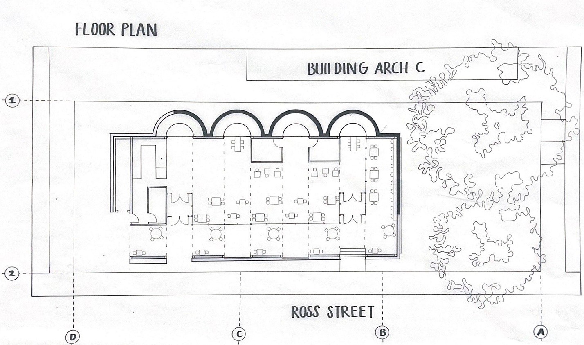
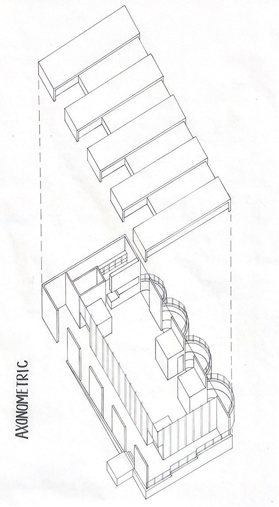
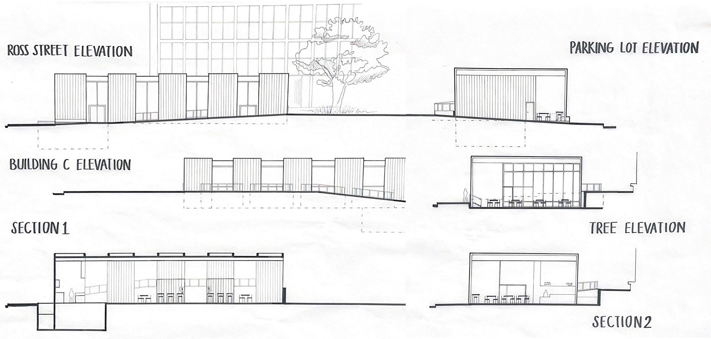

A welcoming campus café shaped by capacity, daylight, and flexible seating.
Designed within specific square-footage and capacity requirements, the café creates an open plan that balances efficient service with varied seating preferences. Large windows bring natural light deep into the space while outdoor seating connects the interior to its surroundings.
Circulation, counter placement, and acoustics were coordinated to support peak periods, with adaptable furniture layouts for study, casual meetups, and small events.

Early plan and service-path study-barista line-of-sight and seating clusters.

The plan organizes the service bar along a central zone; window-side seating captures daylight and campus views. Flexible tables and banquettes accommodate group study and solo work.

Open plan for capacity and flow; daylight and outdoor connection for comfort; adaptable furniture for diverse use-cases from quick coffee to longer study sessions.
“Simple moves-light, sightlines, and seating variety-make the café both efficient and welcoming.”
© 2025 Leslie Lisuly Contreras Mendoza. All rights reserved.